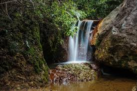
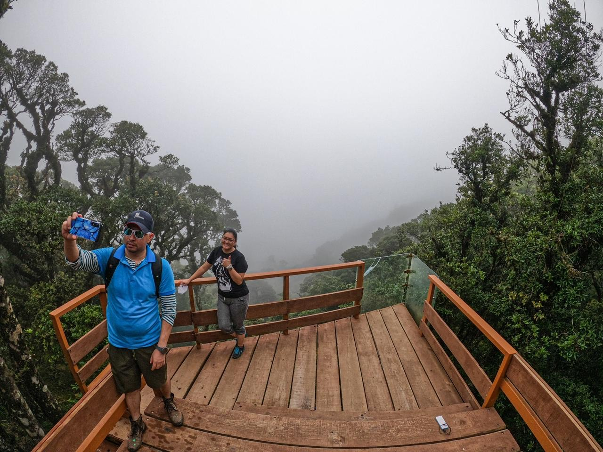
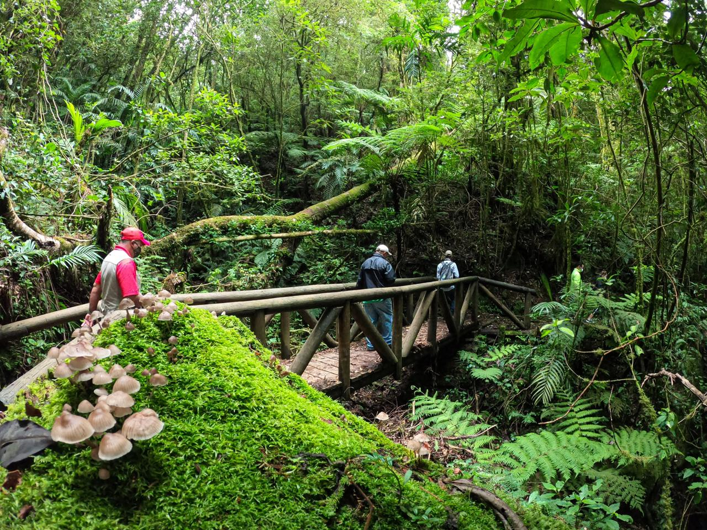
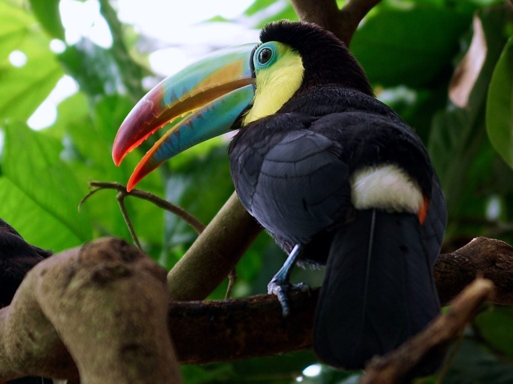
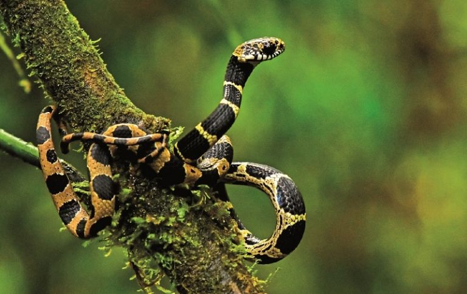
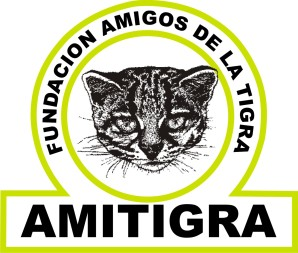

El Parque Nacional La TIGRA, fue el primer parque nacional en Honduras. Su principal objetivo es "la conservación, preservación ecológica y el mantenimiento del potencial hidrológico y territorial de esta reserva natural".
La Tigra es un bosque nublado con una superficie de 328 kilómetros cuadrados (127 millas cuadradas). Tiene una altitud de entre 1800 y 2185 metros. Está ubicado a 25 km (16 millas) de Tegucigalpa, y con a mayor extensión territorial.
Además de su exuberante belleza natural y con un pasado histórico importante, la montaña de La Tigra, con su inmensa vegetación de bosque tropical nuboso también proporciona más del 30% de las necesidades de la ciudad capital, Tegucigalpa, y el 100 % de las comunidades aledañas ha sido protegido desde los años 1920, prueba de ello son los vertederos hidráulico de Jutiapa.



El parque alberga gran diversidad de especies como: tucanes,monos,tapires,pumas,quetzal y además alberga una gran cantidad de insectos y escarabajos.Los helechos son otra atracción principal del parque que miden 20 metros de altura.


Existe una organización civil llamada Amigos de la Tigra (Amitigra) que se encarga de diversas actividades y quienes manejan y protegen el parque nacional La Tigra.

¿Quiénes somos?
El 27 de julio de 1993, por resolución del poder ejecutivo, núm. 186 – 93, la Fundación AMITIGRA obtiene personería jurídica y el 13 de septiembre de ese mismo año, mediante decreto núm. 153 – 93 del Congreso Nacional de Honduras, se le otorga a Amitigra la administración del Parque Nacional La Tigra. Fundación AMITIGRA es una Organización Nacional no Gubernamental (ONG), sin fines de lucro, dedicada a la conservación del medio ambiente, encargada de la administración y protección del Parque Nacional La Tigra.
Nuestra Visión:
El Parque Nacional La Tigra es un área piloto en acciones de manejo y gestión del potencial hídrico, biodiversidad con especies de flora y fauna en peligro o amenazadas de extinción, belleza escénica, sitios de patrimonio histórico y cultural; de su experiencia en manejo y conservación bajo el esquema de procesos de participación comunitaria, se fortalecen las restantes áreas protegidas incluidas en el SINAPH.
Nuestra Misión:
Brindar de manera permanente, bienes y servicios ambientales, económicos y sociales para contribuir a mejorar la calidad de vida de la población rural establecida en su área de influencia, de la ciudad capital y de 3 municipios aledaños a través de la puesta en práctica de actividades de manejo, conservación y educación ambiental, así como fomentando el desarrollo humano y las capacidades de autogestión de los pobladores.